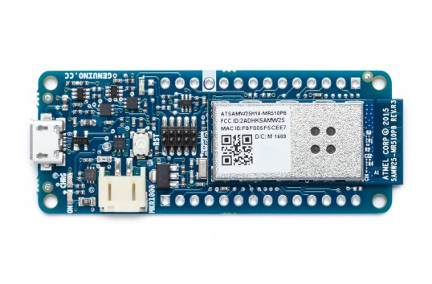

The Arduino MKR1000 is one of the latest wi-fi boards by Arduino. It is designed for IoT projects and can run on battery power using a Li-Po battery or on external 5V, charging the battery while running on external power.
It provides low power wi-fi, a large number of Analog and Digital pins and has a compact format to fit in any IoT project.

This Arduino can be used with the Arduino IDE but the setup requires a little bit more steps as the wi-fi network needs to be configured.
In this tutorial, we’re gonna work on a basic app to control the built-in LED of the Arduino in Node.js using the Johnny-Five framework.
If you want to follow along, you can find the code on my github repo.
Step 1: Setting up the wi-fi on the Arduino
- Plug your Arduino to your computer.
- Open the Arduino IDE.
Once the Arduino IDE is launched, it may prompt you to install the correct package to use with the Arduino MKR1000. If not, follow these steps:
-
Go to
Tools > Board > Boards Managerand search forArduino SAMD Boardsand install the package. -
Once this is done, go to
File > Examples > Firmataand open theStandardFirmataWifisketch. - Have a look at the
wifiConfig.hfile and update your network configurations:- Uncomment the line that says
#define WIFI_101 - Scroll down and find the line that says
char ssid=[] "your network name"and replace the string with the name of your wi-fi network. - Scroll down and find the line that says
char wpa_passphrase[] = "your_wpa_passphrase";and edit your wi-fi password.
- Uncomment the line that says
- Next, check that your sketch compiles properly by clicking on the Verify button.
- Upload it to the board:
- Make sure your board is selected by going to
Tools > Boardand select the Arduino MKR1000. - Select the right port by going to
Tools > Portand select either/dev/cu.usbmodem1or/dev/cu.usbmodem1411. - Click on the upload button.
- Make sure your board is selected by going to
Once your wi-fi is configured on the board, let’s create a basic Node.js app to blink the built-in LED of the Arduino.
Step 2: Setting up the Node.js app
If you’ve never built a Node.js app before, have a look at the Node.js website and follow the simple instructions. Once you have Node installed, you will also need the Johnny-Five framework.
If you’re already familiar with Johnny-five, you’d expect to have a simple file like this:
1 var five = require('johnny-five');
2 var board = new five.Board();
3
4 board.on("ready", function(){
5 console.log("MKR1000 is ready");
6
7 var led = new five.Led(6);
8 led.blink(500);
9 })But for some reason, this doesn’t work for me and I get a timeout error…
However, there is another solution that works! \0/
Extra steps:
Go back to the Arduino IDE, create a new sketch and copy/paste the following code:
1 #include <SPI.h>
2 #include <WiFi101.h>
3
4 char ssid[] = "your-network-name"; // your network SSID (name)
5 char pass[] = "your-network-password"; // your network password
6 int keyIndex = 0; // your network key Index number (needed only for WEP)
7
8 int status = WL_IDLE_STATUS;
9 WiFiServer server(80);
10
11 void setup() {
12 Serial.begin(9600); // initialize serial communication
13 pinMode(9, OUTPUT); // set the LED pin mode
14
15 // check for the presence of the shield:
16 if (WiFi.status() == WL_NO_SHIELD) {
17 Serial.println("WiFi shield not present");
18 while (true); // don't continue
19 }
20
21 // attempt to connect to Wifi network:
22 while ( status != WL_CONNECTED) {
23 Serial.print("Attempting to connect to Network named: ");
24 Serial.println(ssid); // print the network name (SSID);
25
26 // Connect to WPA/WPA2 network. Change this line if using open or WEP network:
27 status = WiFi.begin(ssid, pass);
28 // wait 10 seconds for connection:
29 delay(10000);
30 }
31 server.begin(); // start the web server on port 80
32 printWifiStatus(); // you're connected now, so print out the status
33 }
34
35
36 void loop() {
37 WiFiClient client = server.available(); // listen for incoming clients
38
39 if (client) { // if you get a client,
40 Serial.println("new client"); // print a message out the serial port
41 String currentLine = ""; // make a String to hold incoming data from the client
42 while (client.connected()) { // loop while the client's connected
43 if (client.available()) { // if there's bytes to read from the client,
44 char c = client.read(); // read a byte, then
45 Serial.write(c); // print it out the serial monitor
46 if (c == '\n') { // if the byte is a newline character
47
48 // if the current line is blank, you got two newline characters in a row.
49 // that's the end of the client HTTP request, so send a response:
50 if (currentLine.length() == 0) {
51 // HTTP headers always start with a response code (e.g. HTTP/1.1 200 OK)
52 // and a content-type so the client knows what's coming, then a blank line:
53 client.println("HTTP/1.1 200 OK");
54 client.println("Content-type:text/html");
55 client.println();
56
57 // the content of the HTTP response follows the header:
58 client.print("Click <a href=\"/H\">here</a> turn the LED on pin 9 on");
59 client.print("Click <a href=\"/L\">here</a> turn the LED on pin 9 off");
60
61 // The HTTP response ends with another blank line:
62 client.println();
63 // break out of the while loop:
64 break;
65 }
66 else { // if you got a newline, then clear currentLine:
67 currentLine = "";
68 }
69 }
70 else if (c != '\r') { // if you got anything else but a carriage return character,
71 currentLine += c; // add it to the end of the currentLine
72 }
73
74 // Check to see if the client request was "GET /H" or "GET /L":
75 if (currentLine.endsWith("GET /H")) {
76 digitalWrite(9, HIGH); // GET /H turns the LED on
77 }
78 if (currentLine.endsWith("GET /L")) {
79 digitalWrite(9, LOW); // GET /L turns the LED off
80 }
81 }
82 }
83 // close the connection:
84 client.stop();
85 Serial.println("client disonnected");
86 }
87 }
88
89 void printWifiStatus() {
90 // print the SSID of the network you're attached to:
91 Serial.print("SSID: ");
92 Serial.println(WiFi.SSID());
93
94 // print your WiFi shield's IP address:
95 IPAddress ip = WiFi.localIP();
96 Serial.print("IP Address: ");
97 Serial.println(ip);
98
99 // print the received signal strength:
100 long rssi = WiFi.RSSI();
101 Serial.print("signal strength (RSSI):");
102 Serial.print(rssi);
103 Serial.println(" dBm");
104 // print where to go in a browser:
105 Serial.print("To see this page in action, open a browser to http://");
106 Serial.println(ip);
107 }Change the SSID and password at the beginning of the file and upload the sketch to the Arduino.
Once it’s uploaded, open the Serial Monitor and make sure it is set to 9600 BAUD. After a few seconds, it should print out the Arduino’s IP address. Copy it and keep it somewhere because we’re going to need it soon.
Make sure you re-upload the StandardFirmataWifi sketch to your Arduino before switching back to your Node.js app.
To get the Arduino MKR1000 working with Johnny-five, we’re going to need the etherport-client module, so, in your terminal, run npm install etherport-client --save.
Then, we just need to require this module and set it up with the IP address and port of the Arduino, like this:
1 var EtherPortClient = require("etherport-client").EtherPortClient;
2 var five = require('johnny-five');
3
4 var board = new five.Board({
5 port: new EtherPortClient({
6 host: "192.168.43.36", //Your IP goes here
7 port: 3030
8 }),
9 timeout: 1e5,
10 repl: false
11 });
12
13 board.on("ready", function() {
14 console.log("READY!");
15 var led = new five.Led(6);
16 led.blink(500);
17 });
And you should see the Arduino’s built-in LED blink! :) Now you can add more components and build more interesting projects using the Arduino MKR1000 and Johnny-five!